About a month ago, I had an empty bottle sitting on my desk and figured it would be better to use it as a pseudo-aquarium than it would be to throw it out. I made a homunculus and stuck him in there. He sat on a shelf for a few weeks and he would’ve stayed there had I not noticed that he looked pitiful in his empty enclosure. I wanted him comfortably suspended, instead of being propped up on his side, able to grow and rest as he pleased.
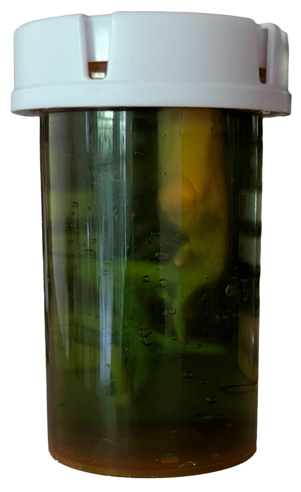
I found some thick, viscous gel and filled the container before putting him back in. He looked great. And then he got too comfortable.
A few days later, I decided to check on him and noticed he was growing. His head had expanded vertically and his torso, along with a few of his arms, had thickened.
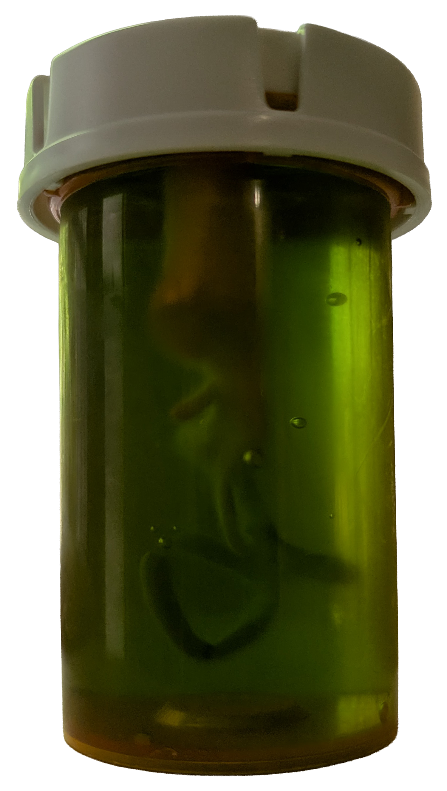
This change in events piqued my interest, so I began documenting his growth and decided to make him a brother. I made sure to document this one's form before he went in the gel:
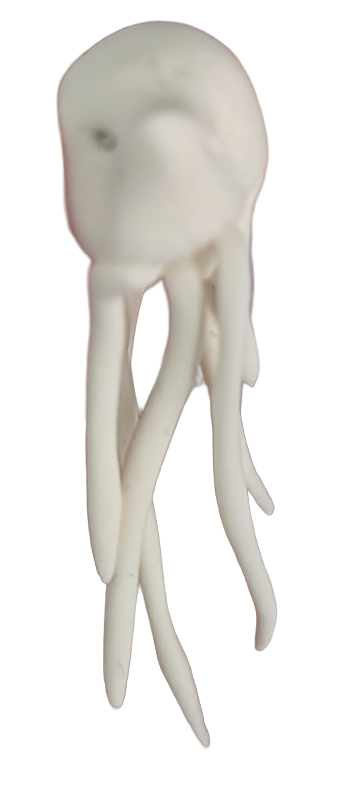
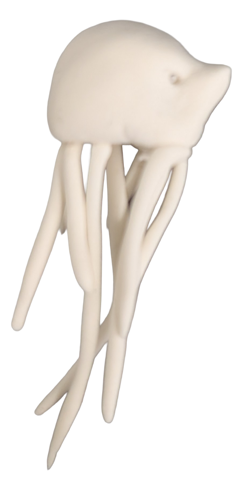
His newly formed brother quickly followed suit, except he decided to switch it up by expanding the bulk of his mass horizontally.
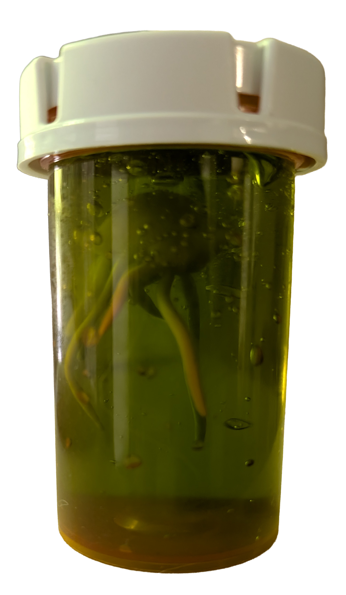
My original homunculus wasn’t slowing down and was perhaps feeling a bit competitive. Within a few days of his brother’s creation, his head was nearly hitting the top of his enclosure.
Out of concern that the both of them would expand too quickly, I popped them in the fridge.
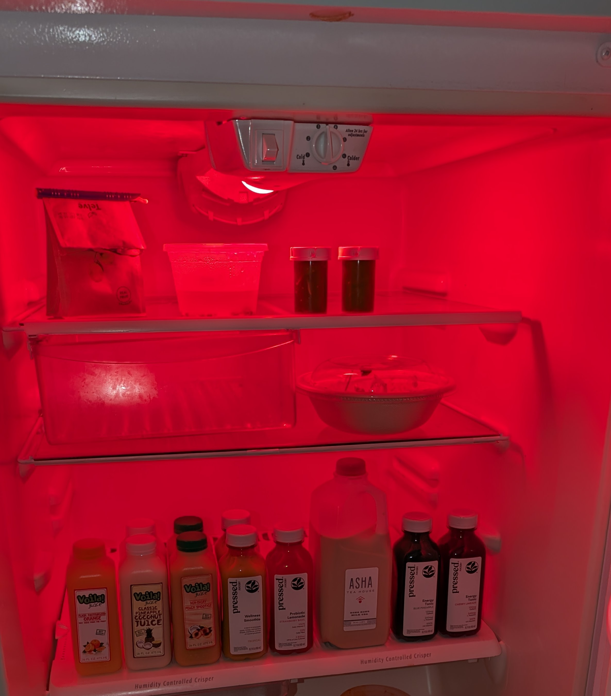
While the cold did succeed in slowing their growth rate, I began to feel cruel for confining them to such a dark, empty environment. So after two days, they made their return to the shelf to thaw.
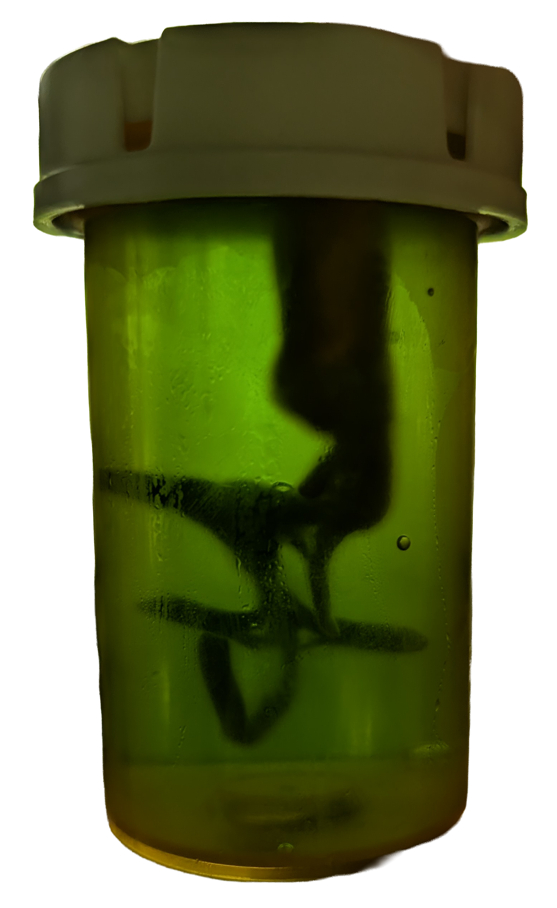
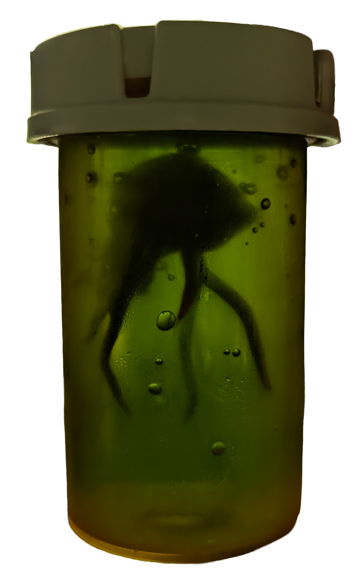
This was, perhaps, too bold of a move. Just two days later, their head growth was out of control. I had to take the lids off of their containers to really capture it. Much like my homunculi, I got too ahead of myself and decided to let them go crazy, consequences be damned.
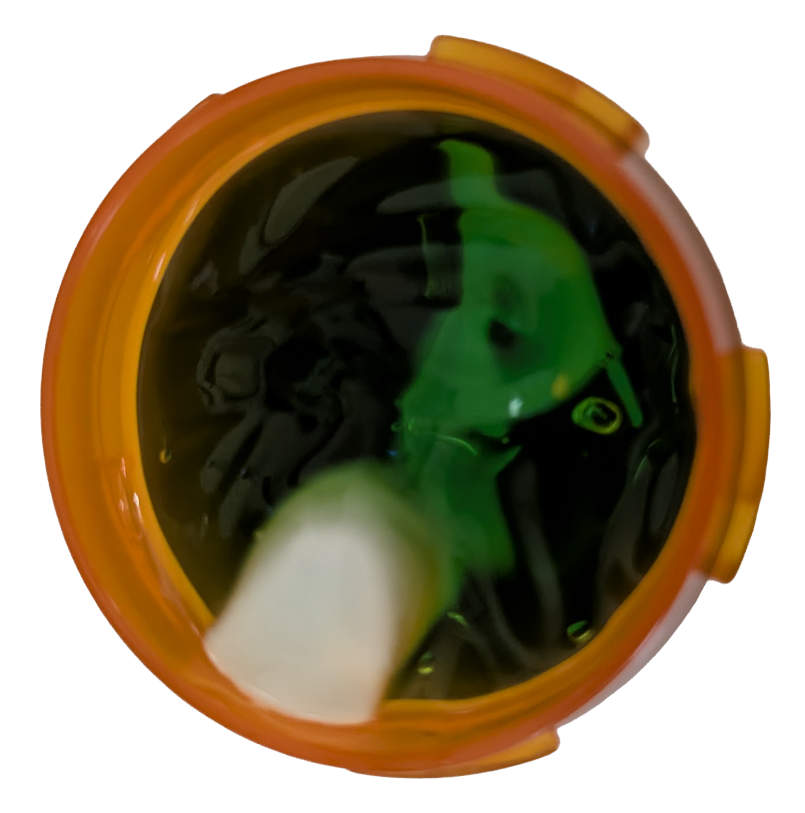
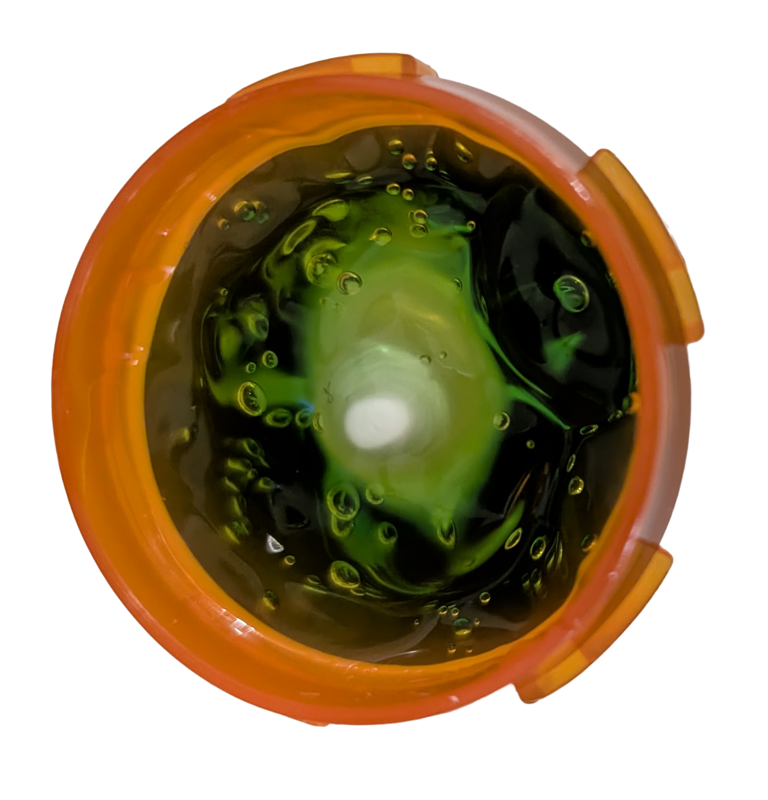
Consequences caught up to me. At the time of writing this, they’ve had another two and a half weeks to grow. I’ve slowed down my photo documentation because their rates have slowed significantly. You can see a certain haziness developing around their heads. It seems that they’ve reached a limit and are currently disintegrating into the gel. I’ve considered transferring them to a larger, perhaps even shared enclosure, but they had more room to grow horizontallyin their current bottles and chose to enter a disintegration phase instead.
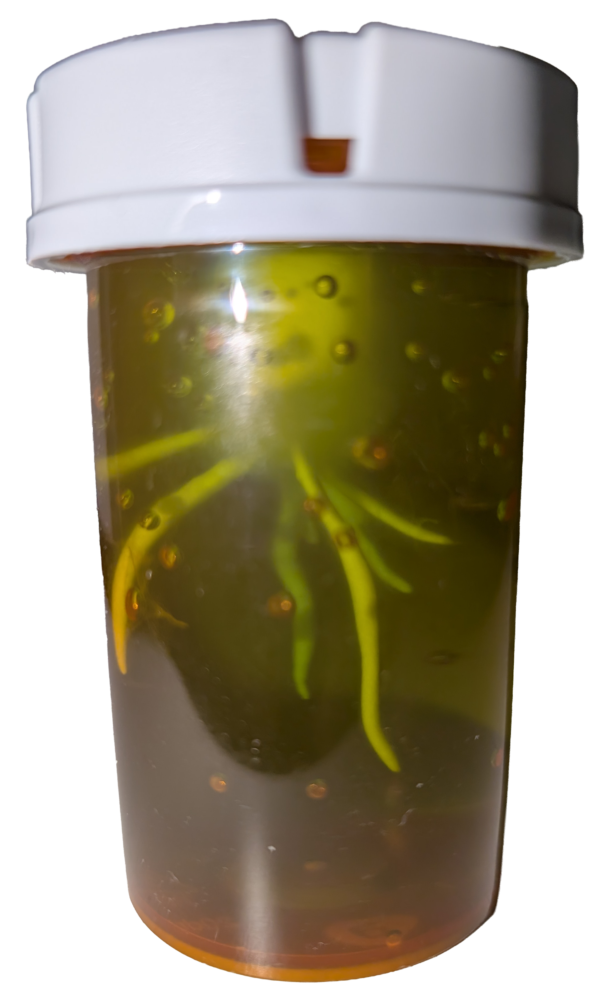
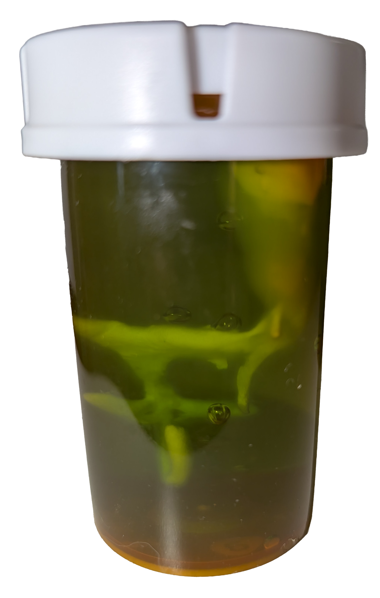
Another consideration was providing them with an additional food source, which I still might try. My concern with this is that introducing a secondary liquid would speed up their decline, while any sort of solid would either go untouched or trap them in a half-disintegrated state.